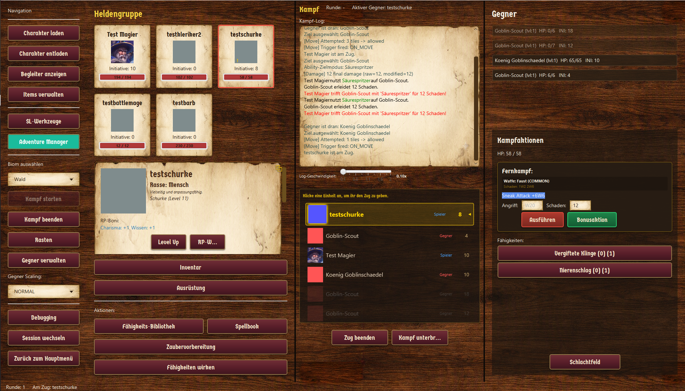

Beherrsche das Schlachtfeld.
Das taktische Command-Center für moderne Pen-and-Paper-Sessions. Entwickelt für Flow, Klarheit und unvergessliche Momente.
In aktiver Entwicklung — noch kein Releasezeitpunkt
Das Command-Center in Aktion
Echtzeit-Kampftracking, Initiative-Reihenfolge, Spell-Slots und Schadensberechnung — alles in einem Dashboard.

Die Vision hinter Dice & Screen
Ein Werkzeug, das Spielleitung stärkt und Abenteuer lebendig macht.
Dice & Screen soll das vollständigste, modularste TTRPG-Command-Center werden. Ein Werkzeug, das Kreativität entfesselt und Sessions flüssiger macht.
Es verbindet taktische Tiefe mit erzählerischer Freiheit - für Gruppen, die mehr erleben wollen als Initiative und Tabellen.
Wir bauen ein System, das wächst, sich anpasst und jede Spielrunde stärker macht.
Mehr Fokus. Mehr Flow. Mehr Abenteuer.
Alles für dein Abenteuer
Drei Bereiche, ein System — volle Tiefe auf der Feature-Seite.
Kampf
3D-Schlachtfelder mit Voxel-Terrain, Fog of War und Tabletop-Modus. Taktische Tiefe trifft auf visuelle Klarheit.
Mehr erfahren →Abenteuer
Kampagnen planen, Weltkarten erkunden, lebendige Städte betreten. Von der Taverne bis zum Storyline-Graph.
Mehr erfahren →Grundlagen
Dashboard, Creator-Tools, Inventar und drei Session-Modi. Alles modular, alles unter deiner Kontrolle.
Mehr erfahren →Spielleitung ohne Unterbrechungen
Weniger Verwaltung, mehr Erzählen - und das in jedem Spielstil.
Weniger Klicks, weniger Tabellen, weniger Chaos. Ob erzählerisch oder taktisch: Wechsle jederzeit zwischen Theatre of Mind und Grid - ohne Bruch, ohne Aufwand. Und wenn deine Kampagne wächst, wächst Dice & Screen mit.
Du leitest. Das System arbeitet.
Das Wissensarchiv
Items, Klassen und mehr — das vollständige Handbuch zu Dice & Screen.
Bleib auf dem Laufenden
Dice & Screen befindet sich in aktiver Entwicklung. Es gibt aktuell keinen festen Releasezeitpunkt — aber du kannst dich melden, wenn du Fragen hast, Feedback geben oder bei der Closed Beta dabei sein willst.